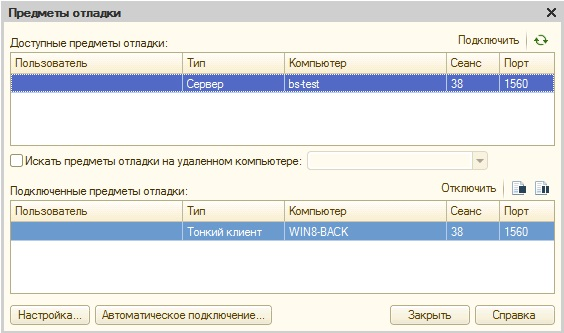
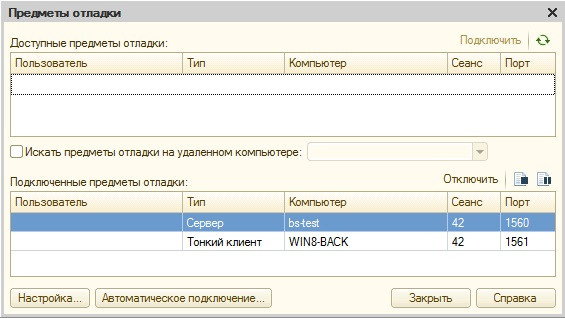

Сервер 1С у меня на Линукс-сервере, клиент запускаю на windows.
1. Как отличить, запущен ли сервер 1С в режиме отладки или нет
После того как из конфигуратора запустили отладку (f5). Смотрим "Отладка" -> "Подключение".
Если ни в "Доступных предметах отладки", ни в "Подключенных предметах отладки" нет предмета с типом "Сервер", то значит сервер 1с запущен НЕ в режиме отладки (debug):
2. Ели сервер 1С запущен в режиме отладки но при начале отладки (клавиша F5) предмет отладки с типом "Сервер" самостоятельно не попадает в "Подключенные предметы отладки", то в моем случае были проблемы с ненастроеным брандмауэром.
Причем если я нажимал кнопку "Подключить", то предмет отладки "Сервер" из "Доступных предметов отладки" перемещался в "Подключенные предметы отладки", но точки останова на сервере НЕ работали:

3. После того как отключил брандмауэр, при начале отладки (f5) в "Подключенные предметы отладки" автоматически попал предмет с типом "Сервер", и точки останова НаСервере стали срабатывать :)))

Еще один важный момент: для того, чтобы отладка заработала, отключение брандмауэра реально помогло на платформе 8.3 (8.3.5.1383) .